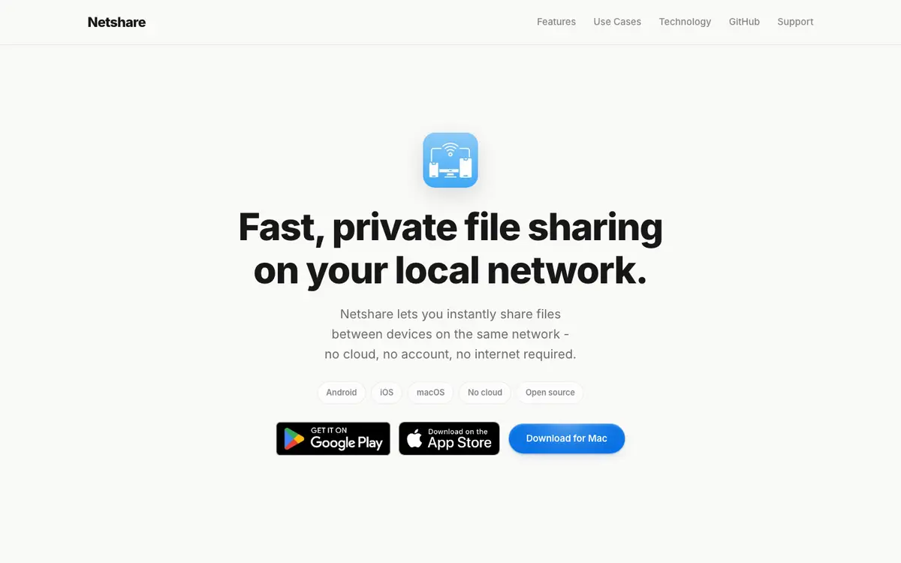
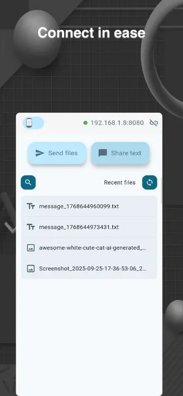
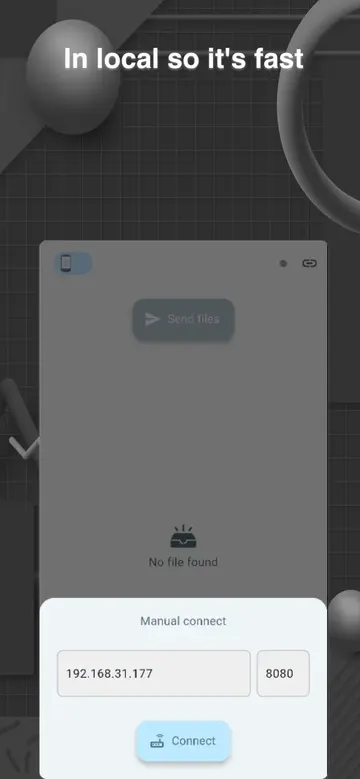
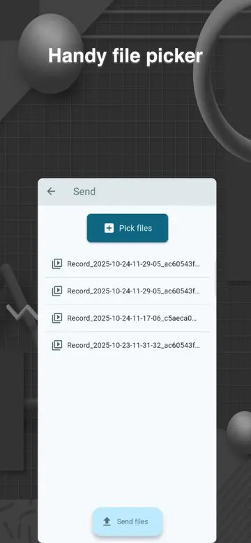

NetShare
Fast, private file sharing on your local network. No cloud, no account, no internet required.

What it is
NetShare moves files directly between devices on the same Wi-Fi or local network. Nothing goes through a cloud service, there is no account to create, and it keeps working when the network has no internet access at all.
Use it between two computers, between a computer and a phone, or between two phones, across Android, iOS, and macOS.
Highlights
- Local-first and fast: files travel straight across your network instead of through a server.
- Private by design: your files stay on your network. Transfers never touch an external server.
- Works offline: made for offices, labs, factories, and internal networks where the internet is restricted or unavailable.
- Cross-platform: one app on Android, iOS, and macOS.
- Open source: the code is on GitHub under the Apache-2.0 license.
Screenshots



Who it's for
- Internal teams: share HR documents, source code, and design files when cloud tools are blocked.
- Factories and industrial sites: reliable transfers on isolated networks with no internet access.
- Schools, labs, and hospitals: keep sensitive data on-premises while still working together quickly.
- Dev teams and studios: move large builds, exports, and media assets between machines without waiting on uploads.
Under the hood
NetShare is built with Flutter, so one codebase runs on every platform with a consistent UI. On Android it relies on netshare_saf, a plugin I wrote to reach the Storage Access Framework. On macOS it ships both through the Mac App Store and as a signed, notarized DMG.
Behind the build
Posts I wrote while building and shipping NetShare:
- How to build a signed and notarized macOS DMG on Flutter
- Introduction to NetShare - Flutter opensource project
- Releasing Flutter projects on GitHub
- Crafting responsive Desktop UI for OverlayEntry in Flutter
- Streamlining exiting your Flutter desktop app with Shortcut keys
Links
- Website: netfshare.site
- iPhone, iPad, and Mac: App Store
- Android: Google Play
- macOS DMG: Download for Mac
- Source code: NetShareOSS/netshare
- Updates: X · YouTube
- Help: Support